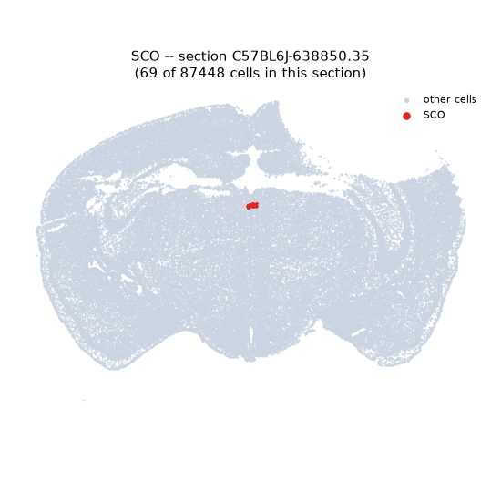
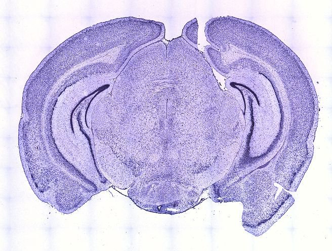
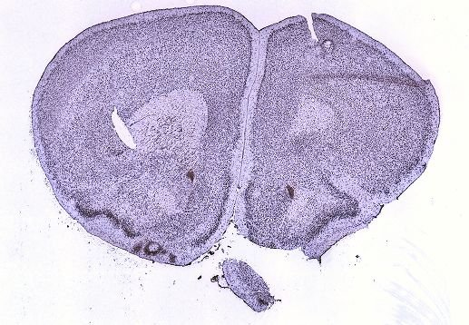
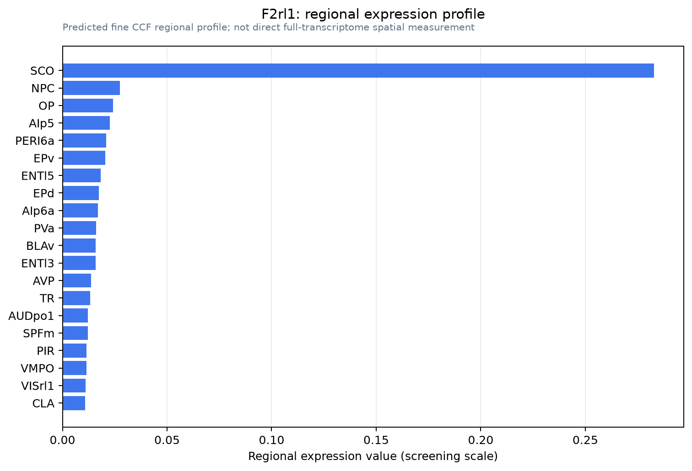

F2rl1
Proteinase-activated receptor 2 (PAR-2) (Coagulation factor II receptor-like 1) (G protein-coupled receptor 11) (Thrombin receptor-like 1)
Spatial tier: STRICT_EXCLUSIVE · Class: GPCR · Top region: SCO (Subcommissural organ) · Positive regions: 1/554
53.6Discovery Score
45.5Targetability Score
CEvidence grade C
What this means: F2rl1: predicted fine-region profile is strict-exclusive, with 1 positive regions out of 554 (limit 12); direct spatial validation is required.
Direct spatial evidence
MERFISH REGION LOCATOR

DIRECT ALLEN ISH

DIRECT ALLEN ISH

Regional expression figure

Predicted WMB × fine-CCF profile; not direct full-transcriptome spatial measurement.
Spatial profile
Evidence and specificity
- Evidence status
- PREDICTED_FINE
- Direct sources
- None; predicted localization only
- Exclusive threshold
- 12 positive regions out of 554
- Spatial specificity
- 0.440
- Top-region fraction
- 0.359
- Filter status
- PASS
Interpretation limits
- Cell-type-to-region projection is imputed expression, not direct spatial measurement.
- Adult reference atlases do not establish stability across age, sex, strain, state, or disease.
- Transcript abundance does not guarantee protein abundance or genetic-tool performance.